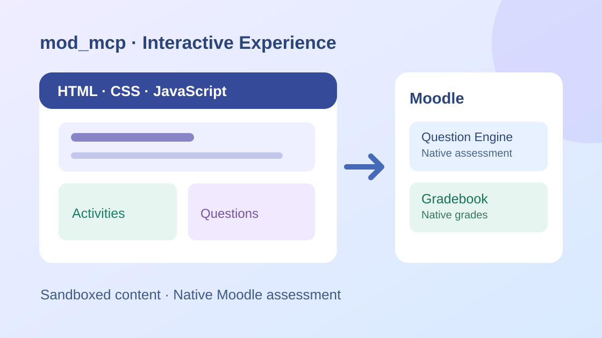

mod_mcp lets teachers create interactive pages, exercises and simulations with ChatGPT or Claude in two ways: sending content directly to Moodle through an MCP connection or generating HTML in chat and copying it into the activity Manager without an MCP connection. The module also integrates Moodle's native question bank and gradebook.
Install and create an activity
Install mod_mcp under mod/mcp in Moodle 4.5 LTS or 5.x and upgrade the site. To generate and paste HTML manually, neither local_mcp nor an MCP connection is required. Install local_mcp only if you want ChatGPT or Claude to save content and perform actions directly in Moodle.
With an MCP connection: author from chat
- Connect Moodle to ChatGPT or Claude using the MCP protocol with the necessary permissions.
- Create an Interactive Experience in the course or use
mcp_create_activity; it starts hidden and supplies a prompt with the course context. - Request a complete HTML document, save a draft using
mcp_save_contentand review the preview. - Publish after review through
mcp_publishor Manager, following the permissions and confirmation required for MCP operations.
Without an MCP connection: generate, copy and paste in Manager
- Create an Interactive Experience in Moodle and open its Manager (
/mod/mcp/manage.php), with permission to manage the activity. - Copy the activity's authoring prompt into ChatGPT or Claude and describe the content you need.
- Ask for a complete HTML document, copy the generated code and paste it into the Manager's Content field, without connecting the AI to Moodle.
- Click Save draft, check the preview and publish directly in Moodle when ready.
Copying and pasting HTML does not call MCP tools, automatically create question-bank questions or attach native questions to the activity. Those actions must be performed using Moodle's appropriate features or tools exposed by the MCP connection, when available.
Try asking
“Create a responsive Interactive Experience to teach fractions, with examples and exercises, and leave it as a draft for review.”
“Attach native Moodle multiple-choice questions and show the draft before I approve publishing.”
“Generate a complete HTML document with CSS and JavaScript for an interactive timeline of Brazilian history. I will copy and paste it into the mod_mcp Manager without an MCP connection.”
Questions, grades and progress
The activity uses Moodle Question Engine for attempts and marking and grade_update for gradebook integration. The current implementation supports one attempt per student and compatible question types including multiple choice, true/false and short answer. Use Moodle Quiz for advanced assessment, grading review and manual marking.
For random questions, first attach ten native bank questions with mcp_attach_question, read the settingshash from mcp_get_activity, and confirm mcp_configure_questions with questionselection: random, questionsperattempt: 5 and shufflequestions: true. The tool validates available questions and does not publish the activity. The server chooses the subset once at attempt start and persists it in the native Question Engine, never in authored HTML. Teachers must review and separately approve publication.
The window.MoodleMCP SDK handles progress storage, interaction tracking and completion checks through Moodle. Authored HTML cannot submit arbitrary grades or supply answer keys to the grading system.
allow-same-origin or Moodle session-cookie access. Immutable revisions allow teachers to work on a draft while students continue seeing the published version. Students do not need ChatGPT or Claude.Available tools with an MCP connection
mcp_create_activity, mcp_get_activity, mcp_save_content, mcp_create_question, mcp_attach_question, mcp_configure_questions, mcp_upload_asset and mcp_publish. Refresh tool discovery after installation.
Source and deployment
Full Moodle integration testing and CI review are still required before production deployment.